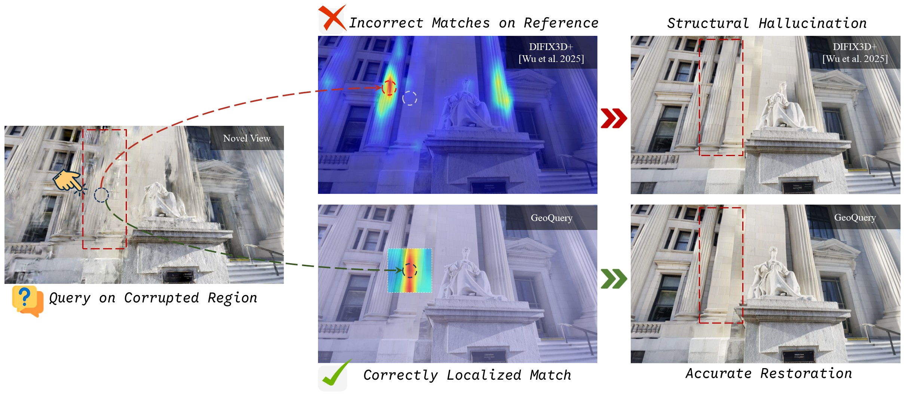
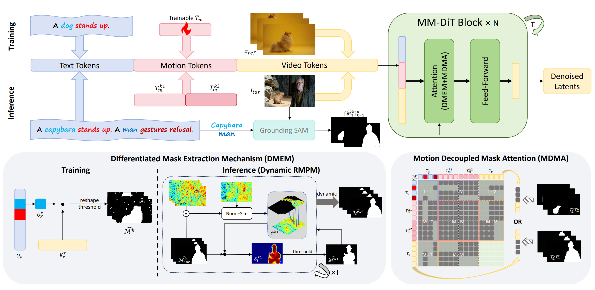

Xiao Cao 曹啸
Ph.D. Student · 3D Reconstruction · Generative Models
University of Electronic Science and Technology of China
I work on 3D reconstruction and generative modeling, with a focus on feed-forward methods, diffusion models, and neural scene representations.
↓About
I am a Ph.D. student at the School of Computer Science and Engineering, University of Electronic Science and Technology of China (UESTC), advised by Prof Wen Li. Prior to this, I received my B.Eng. degree from the School of Computing and Artificial Intelligence, Southwest Jiaotong University (SWJTU). During my undergraduate studies, I was fortunate to work with Prof Xiaolin Wu, from whom I received valuable research training.
My research focuses on building efficient and generalizable 3D vision systems from 3D reconstruction to generative world models. I am particularly interested in geometry-aware diffusion, feed-forward neural rendering, and scalable 3D representations.
Connect
News
View all news-
🎉Our paper GeoQuery has been accepted to SIGGRAPH 2026.
-
🎉Our paper has been accepted to CVPR 2026. Congratulations to Yuze Li and all collaborators!
-
📖I graduated from SWJTU and started my Ph.D. at UESTC.
-
🎉Honored to receive the Outstanding Graduate Award of Sichuan Province.
Publications
View all publicationsBold: First author · * Corresponding author

Visitors
Global visitor map powered by ClustrMaps.
Visitor locations are estimated by ClustrMaps from page views.